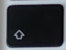
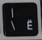

Показую як поставити символ гривні на мак (з зображенням клавіатури).
В багатьох макбуках неправильно позначена кнопка для символу гривні для української мови. Тож я вирішив візуально показати де знайти гривню.
Символ гривні "₴" на мак
Для того щоб поставити символ гривні ₴ на макбуці натисніть клавішу SHIFT (  ) та |\ (  ) одночасно.
Дякую за увагу. Читайте більше навчальних матеріалів про мак на сайті абетка!